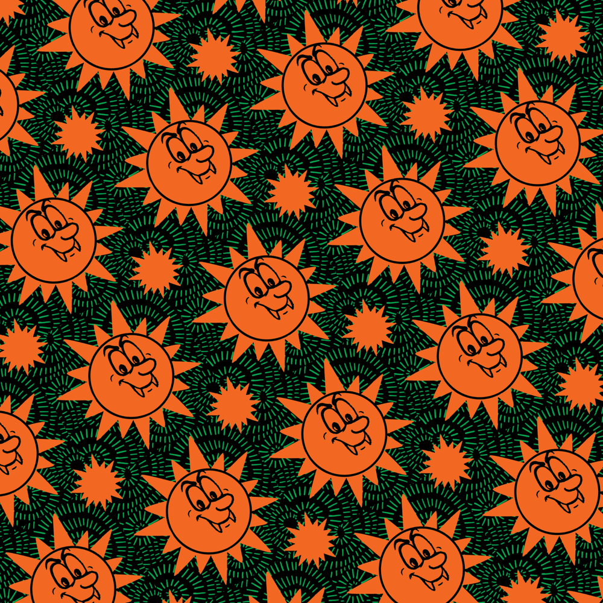
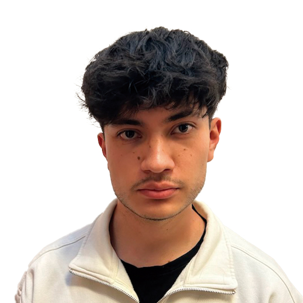
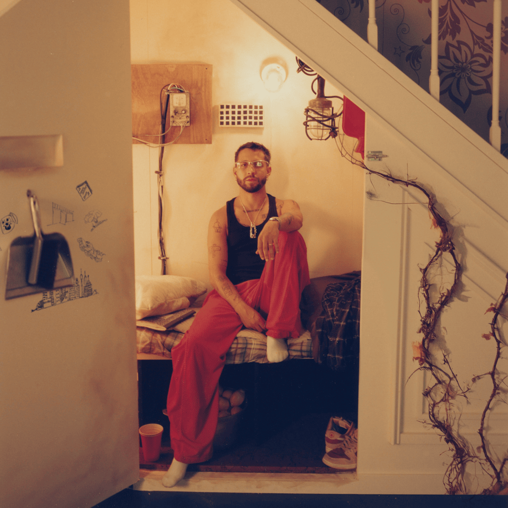
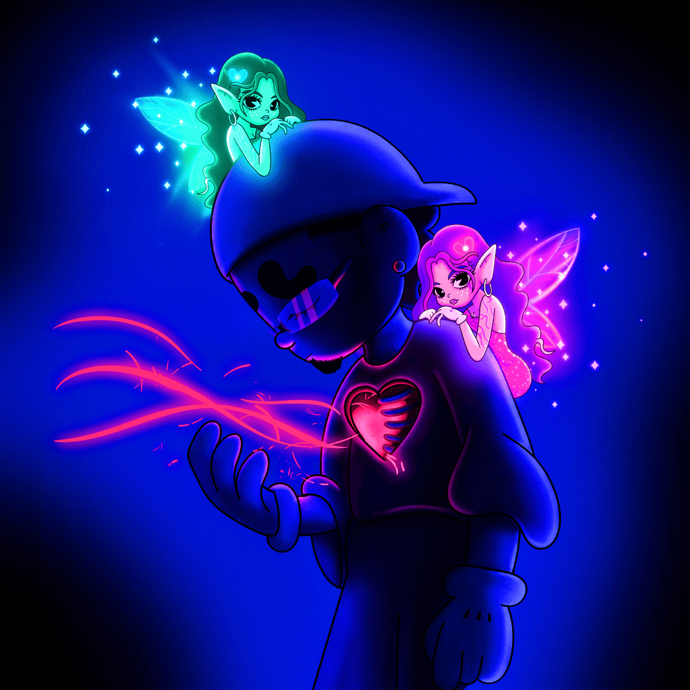

FERXXOCALIPSIS
ALBUM DE FERXXO
- 01. ALAKRAN
- 02. LUNA
- 03. 5O PALOS
0:00
0:00
Diseñador digital & creador de experiencias interactivas.
Creo que las mejores ideas surgen cuando conectas referencias de cine, música y videojuegos con un ojo puesto en la usabilidad y la atmósfera. Me gusta iterar rápido, prototipar en baja y subir la apuesta visual sin perder claridad.
En mi tiempo libre exploro concept art, fotobashing y bandas sonoras; todo eso termina filtrándose en los proyectos que diseño. Busco siempre que cada pieza tenga personalidad y que el usuario sienta que entra en un mundo coherente.

Estudio Diseño de Medios Interactivos en la USFQ. Me interesa especializarme en experiencias interactivas, diseño de interfaces y narrativa visual para videojuegos, medios digitales y páginas web. La carrera me ha dado bases en programación, diseño gráfico y UX, que combino con lo que aprendo por mi cuenta en motion y game design.
Siempre diseño con música de fondo. Estos álbumes son parte de mi banda sonora cuando trabajo en interfaces, motion o niveles en Unity.

ALBUM DE FERXXO

ALBUM DE MORA

ALBUM DE OMAR COURTZ
No solo juego por diversión; veo cada partida como un análisis de interfaces, ritmo y UX en tiempo real. Estos son mis juegos favoritos:
Me fascina cómo los shooters en primera persona con interfaces atractivas logran ser funcionales bajo presión. Analizo cómo la jerarquía visual mejora la toma de decisiones en segundos.
Desde menús deportivos impecables hasta mundos que cambian cada temporada. Me inspiran para crear experiencias dinámicas que se sienten vivas.
Observo cómo el diseño guía al usuario sin necesidad de tutoriales, usando colores, sonidos y formas para comunicar rendimiento y objetivos de forma clara.
Combino diseño y desarrollo para convertir ideas en experiencias visuales claras y memorables.